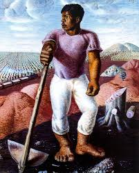
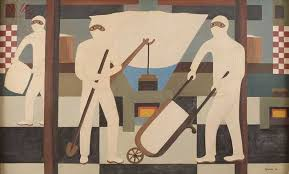

A história da população negra no Brasil é marcada por séculos de escravidão, mas também por uma resistência contínua e uma rica contribuição para a formação do país. Nas escolas, é fundamental abordar não apenas o período escravista, mas também a ancestralidade africana, os reinos e impérios que floresceram antes da colonização, e a vasta cultura que foi trazida e reinventada aqui.
O Dia da Consciência Negra, 20 de novembro, é uma homenagem a Zumbi dos Palmares, líder do Quilombo dos Palmares, símbolo da luta e resistência contra a escravidão. Mais do que uma data comemorativa, é um momento de reflexão sobre a inserção do negro na sociedade brasileira, a luta contra o racismo e a valorização da cultura afro-brasileira.
A Importância da Lei 10.639/03
Essa lei foi um divisor de águas para a educação brasileira. Antes dela, a história ensinada nas escolas muitas vezes marginalizava ou invisibilizava a participação e a contribuição dos povos africanos e de seus descendentes no Brasil. Com a obrigatoriedade, busca-se:
Reconhecer e valorizar a história e cultura afro-brasileira.
Combater o racismo e a discriminação desde a base da formação.
Promover a autoestima de estudantes negros e a compreensão da diversidade para todos.
Desconstruir estereótipos e preconceitos enraizados.
A implementação plena da lei ainda é um desafio, mas a discussão e o trabalho pedagógico sobre o tema são essenciais para construir uma sociedade mais justa e equitativa.
Arte de Pessoas Negras
A arte negra é um universo vasto e multifacetado, que expressa a riqueza cultural, a resiliência e a visão de mundo de artistas afro-brasileiros e da diáspora africana. Nas escolas, apresentar esses artistas e suas obras é fundamental para ampliar o repertório cultural dos alunos e reconhecer a beleza e a profundidade de suas contribuições.
Grandes Nomes e Suas Expressões

Candido Portinari
Embora muitas vezes associado a uma identidade mais ampla, Portinari tinha ascendência negra e suas obras, como "Os Retirantes", retratam a realidade social e as lutas do povo brasileiro.

Djanira da Motta e Silva
Com forte ligação com a cultura popular e religiosa, Djanira retratou cenas do cotidiano, festas populares e figuras do trabalho, muitas vezes incluindo a presença negra com grande sensibilidade.
Abdias do Nascimento
Um artista multifacetado, ativista, político e poeta, Abdias foi um dos maiores defensores da cultura negra no Brasil, utilizando a arte como ferramenta de denúncia e valorização.
Rosana Paulino
Artista contemporânea que aborda temas como a memória, a identidade, o corpo feminino negro e as feridas do racismo em suas instalações, desenhos e gravuras.
Rubem Valentim
Sua obra é profundamente influenciada pelas religiões de matriz africana, transformando símbolos sagrados em formas geométricas abstratas e coloridas.
Musicalidade Afro-Brasileira
A música é talvez uma das mais potentes manifestações da cultura africana no Brasil, moldando profundamente nossa identidade sonora. Do tambor africano ao samba, do maracatu ao rap, a musicalidade negra é um elo vital com nossas raízes e uma força de expressão social e cultural.
Gêneros e suas Origens
Samba: O ritmo mais emblemático do Brasil, com raízes nos batuques africanos.
Capoeira: Mistura de arte marcial, dança, música e jogo, com ritmos intrinsecamente africanos.
Maracatu: Manifestação cultural pernambucana com forte influência dos rituais de reis e rainhas africanas.
Jongo: Dança e música de origem banto (Congo-Angola), praticada em comunidades quilombolas.
Funk e Rap: Gêneros contemporâneos ressignificados no Brasil por comunidades negras e periféricas.
.jpg)
.jpg)
.jpg)